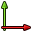

The Plot module allows to edit and save output plots created from other modules and tools. With plot module you can edit easily the working area, the axes, labels, titles, styles, etc. Plot module is an abstraction of matplotlib conveniently addapted to FreeCAD.
Инструменты
Доступные инструменты.
-
 Сохранить диаграмму: Сохраняет диаграмму в нескольких форматах. Вы так же можете выбрать размер и разрешение на выходе.
Сохранить диаграмму: Сохраняет диаграмму в нескольких форматах. Вы так же можете выбрать размер и разрешение на выходе. -  Настройка осей: Добавить, убрать или редактировать оси диаграммы.
-
 Настройка числовых рядов: Редактирует последовательности чисел в титлах и их стиль.
Настройка числовых рядов: Редактирует последовательности чисел в титлах и их стиль. -
 Показать/скрыть сетку: Показывает/скрывает сетку.
Показать/скрыть сетку: Показывает/скрывает сетку. -
 Показать/скрыть легенду: Показывает/скрывает легенду.
Показать/скрыть легенду: Показывает/скрывает легенду. -
 Настроить подписи: Редактирует подписи.
Настроить подписи: Редактирует подписи. -
 Настройка расположения и размеров: Устанавливает позиции элементов.
Настройка расположения и размеров: Устанавливает позиции элементов.
{kind=link}
Scripting
Since Plot module is a layer over matplotlib, you are free to use all matplotlib commands over plot instances. See scripting examples section to see examples.